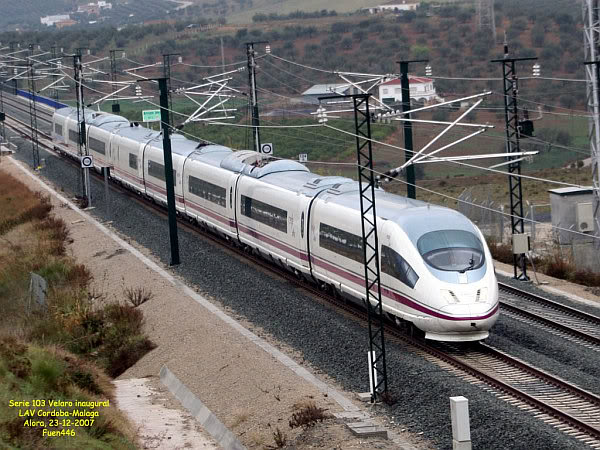

2014-10-09 20:06:00
中共是后进国家，对比于世界先进的工业强国，其主要的优势在于对资金和人力的大规模动员能力。经过35年的努力，在若干对资金和技术人力要求很高的重工业，已经获得了重大的突破。一般人的印象中最明显的，大概是高铁。不过中共的高铁技术主要靠最近十年从德日法直接引进技术，虽然已经消化吸收，其尖端技术程度仍然只与原產国大略持平。例如其最先进的列车CRH-380B基本上就是德国Siemens的Velaro E。德国人转移了全部技术之后，到现在还是能出口不少零件（如剎车制动器），并没有吃大亏。在一些一般消费者不会注意到的工业机械和厰房器材方面，中共才占有全球技术的最高点，例如港口装卸货用的龙门吊车，超大型锻压机等等。不过在整个工业领域都领先的，莫过于电力技术，包括电力传输、水力发电、核能发电和火力发电，中共都已经或即将青出于蓝。今天我就简单谈谈燃煤火力发电。
德国Siemens的Velaro E，原本为西班牙高铁系统而设计，2007年服役，最高设计营运速度为每小时380公里。2009年开始技术转移给中国北车，成为CRH-380B。
现代的燃煤发电技术基本上是烧煤把水加热之后產生蒸汽来推动蒸汽轮机。如同所有的热机，其工作温差比值越大，效率就越高。因为工作温差的低限就是室温，所以要提高效率，就必须提高蒸汽温度。歷史上，在二戦后，首先进步到超临界蒸汽系统，也就是温度和压力超过了水的液气临界点（374 °C，218大气压）。后来最高温度先提升到500°C，又在最近几年提升到了600°C，所以称为超超临界技术。原本荷兰和日本在这个领域最领先，其超超临界燃煤发电厰的最高效率达到了43%。但是中共虽然到2002年才开始这方面的研究，在2006年才有第一座600°C级超超临界电厰，可是在2008年，上海外高桥第三发电厰（简称“外三”）的两座先进超大型1000兆瓦（MW）火电机组就正式投產，把最高效率提高到了45%，并且持续领先至今。目前中共的研究人员正在努力突破700°C的超超临界技术，预计在五年以内，将把最高效率进一步提高到50%；这将超越由Siemens保持的天然气火力发电燃气轮机的世界纪录，成为世界效率最高的单循环热机。
上海外三的燃煤机组不但效率最高，其脱硝脱硫的技术都是世界第一，所以它也是全球最乾净的燃煤火电厰。中共总理李克强在2014年开始大力整治空气污染，除了关闭老旧的炼钢和水泥工业之外（生產水泥用煤很多而效率极低），最重要的就是要改进燃煤火电厰。在年初举办的中共国家能源委员会会议上，李克强正式宣布在2015年开始的十三五（第13个五年计划）期间，必须把全国的燃煤火力发电厰都提升到外三的技术水准，随即中共的五大发电集团中的三个就开始着手。到了七月1日，中共国务院对所有2012年以前，也就是只有两年旧的，所有燃煤火电厰执行世界史上最严格的大气污染物排放标准，于是最后两个发电集团也不得不跟进。目前的主要问题是1000兆瓦级的火电机组太大了，不能开开关关来对应用电量在一天内的变动。这项任务适合由小型的天然气火力发电厰来担任，而中共并没有像美国那様的大量可轻易开发的页岩气，所以必须从俄国进口天然气，这个三十年5000亿美元的合约在今年四月已经签了。
中共最新的燃煤火电技术突破在于褐煤。褐煤是煤化不完全的煤，杂质很多，尤其是含水量达36%，用起来效率很低。但是褐煤占世界煤矿总储量的40%，中国总储量的13%。如果能够高效脱水，对能源问题的解决将是一大进步。在2014年九月11日，位于内蒙的华能公司匯流河电厂正式启用新一代的褐煤脱水技术，可以高效脱出褐煤含水量的一半以上，不但大幅增高褐煤发电的效率，而且可以使电厰的用水自给自足，从此褐煤电厰不必建在河边。这是将嘉惠眾多低开发国家的福音。
相对的，美国不但不再投资在燃煤技术上，而且由于发现了世界第一的页岩油和页岩气矿藏，已经积极地展开反煤电技术的宣传戦（详见这篇刊在今天的纽约时报上的文章：http://www.nytimes.com/2014/10/10/world/asia/chinas-plan-for-regional-development-bank-runs-into-us-opposition.html?_r=0），以作为打撃中共的经济和外交手段。当然，最后最吃亏的，是南亜和非洲的落后国家；他们的财政是负担不起进口的石油和天然气的，一旦燃煤火电也被打倒，他们将永远也无法提供足够的电力，任何工业化的希望也成为画饼。这对美国来说，是一举两得。对有良知的人类来说，则不是最理想的结局。